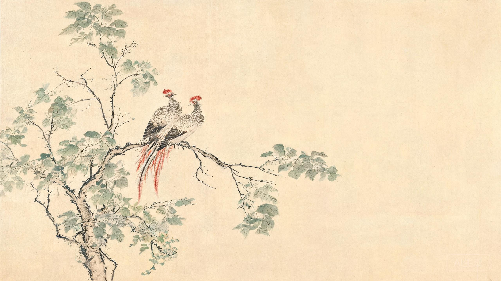

丙午马年 · 腊月降生
李吴合璧 · 诗经典籍 · 低重名率
2026 · 08 · 31
父姓李，母姓吴；宝宝预计 2026 年 12 月底出生。2027 年立春在 2 月 4 日，故 12 月底出生无论按农历还是按节气，均属丙午马年；且生于冬至之后，月柱为庚子。家长已有意向名「李翊」，本方案在此基础上延展，要求出自《诗经》《楚辞》等典籍、好听且重名率低，大名配小名。
上策 · 谐音借字：以「梧」代「吴」。「梧」取自《诗经·大雅·卷阿》「梧桐生矣，于彼朝阳」，梧桐是凤凰所栖之嘉木，木字旁又恰是马年宜用字，音、形、义三全。
中策 · 意象呼应：不直接出「梧」字，而用「疏桐」「丹桐」等带「桐」字的名字，与「梧桐」意象呼应，暗含母姓之音。
旁策 · 吴虞同源：据《史记·吴太伯世家》，太伯、仲雍奔荆蛮建吴，其后又别封于虞，吴、虞本出一脉，「虞」字亦可入名备选。
不建议「李吴×」直接拼姓：「吴」谐音「无」，易被读作否定（如「李吴桐」读似「理无通」），故以谐音意象为佳。
生肖马喜草、木、禾、豆（马食草谷，主衣食丰足）、喜木（树下歇荫）、喜巾、衣、彡、羽（披彩衣为良驹）；午未六合，「羊」字根亦吉。忌田、车（马耕田拉车为劳苦）、忌子（子午冲）、忌丑（丑午害）。本方案十二名用字逐一核对，均无生肖忌用字根，其中「梧、桐」带木、「蓁」带草、「翊」带羽，皆合马性。
另：12 月底生于冬至后，月柱庚子，子午相冲。若家中讲究八字调和，可待出生取得准确时辰后，以五行用字微调；本方案不强行补五行，以诗意与音律为先。
「翊」，《说文》释为「飞貌」，本义飞翔，引申为辅佐、明日（通「翌」），寓意振翅高飞、承前启新；读音 lǐ yì，上声接去声，干脆有力。重名面看，「翊」字在 2021—2022 年一度走热，但未进入 2024—2025 年各地新生儿热门用字榜，热度已回落[2][4]。不过「李翊」二字组合已有唐代韩愈门生（《答李翊书》）、明代晋宁名贤及当代创业者等多人使用，且有网络小说角色；李为第一大姓，两字名重名概率天然高于三字名。
结论：「李翊」可用，但稀有度一般。若想保留「翊」字，推荐升级为「李翊梧」——既留住家长心仪之字，又借「梧」融母姓、降重名。
| 大名 | 拼音 | 性别倾向 | 典籍出处 | 小名 | 重名风险 |
|---|---|---|---|---|---|
| 李翊梧 | lǐ yì wú | 男 / 中性 | 《诗经·大雅·卷阿》 | 小梧 · 翊翊 | 低 |
| 李鸣梧 | lǐ míng wú | 男 | 《诗经·大雅·卷阿》 | 鸣鸣 · 小梧 | 低 |
| 李修能 | lǐ xiū néng | 男 | 《楚辞·离骚》 | 小修 · 阿能 | 中低 |
| 李九皋 | lǐ jiǔ gāo | 男 | 《诗经·小雅·鹤鸣》 | 小皋 · 鹤鸣 | 中低 |
| 李如璋 | lǐ rú zhāng | 男 | 《诗经·大雅·卷阿》 | 小璋 · 璋儿 | 中 |
| 李静嘉 | lǐ jìng jiā | 女 | 《诗经·大雅·既醉》 | 嘉嘉 · 小静 | 低 |
| 李栖梧 | lǐ qī wú | 女 / 中性 | 《诗经·卷阿》+《庄子》 | 小梧 · 桐桐 | 中低 |
| 李令仪 | lǐ lìng yí | 女 | 《诗经·小雅·湛露》 | 仪仪 · 小令 | 中 |
| 李穆清 | lǐ mù qīng | 女 | 《诗经·大雅·烝民》 | 清清 · 穆穆 | 中 |
| 李蓁蓁 | lǐ zhēn zhēn | 女 | 《诗经·周南·桃夭》 | 蓁蓁 · 夭夭 | 中 |
| 李疏桐 | lǐ shū tóng | 女 / 中性 | 苏轼《卜算子》 | 桐桐 · 小桐 | 低 |
| 李丹桐 | lǐ dān tóng | 女 | 李商隐诗 | 小丹 · 桐桐 | 低 |
重名风险为综合「热门用字榜 + 全网名人/角色占用检索」的定性评估，精确人数请以公安官方重名查询为准（见第四章）。
《诗经·大雅·卷阿》「凤凰于飞，翙翙其羽……梧桐生矣，于彼朝阳。」
寓意「翊」为飞貌、为辅佐；「梧」为凤凰所栖之嘉木，谐音母姓吴。合意为振翅高飞、栖于朝阳之梧，亦喻孩子承父母两姓之爱。
查重全网未见知名人物或角色占用；「翊」「梧」均不在 2024—2025 热门用字榜，重名风险低。
小名：小梧 / 翊翊 / 桐桐
《诗经·大雅·卷阿》「凤凰鸣矣，于彼高冈。梧桐生矣，于彼朝阳。」
寓意凤凰鸣于高冈、梧桐生于朝阳——才华得展、德音引凤；「梧」谐音母姓吴，画面开阔响亮。
查重仅清代台州知府等低知名度同名，无虚构角色占用，重名风险低。
小名：鸣鸣 / 小梧
《楚辞·离骚》「纷吾既有此内美兮，又重之以修能。」
寓意「修能」指卓越的才能与修养，屈原以「内美 + 修能」自许，寓意德才兼备、内外兼修。
查重同名者为普通人士，另有一部网文主角（知名度低），重名风险中低。
小名：小修 / 阿能
《诗经·小雅·鹤鸣》「鹤鸣于九皋，声闻于天。」
寓意鹤在深泽鸣叫，声音直达于天——真才实学者不求闻达而自显，低调而致远，气质清贵。
查重有辛亥志士、画家、播音员等数位历史同名，知名度均不高，无小说占用，重名风险中低，辨识度极高。
小名：小皋 / 鹤鸣
《诗经·大雅·卷阿》「颙颙卬，如圭如璋。」
寓意圭、璋为贵重玉礼器，诗以之赞君子仪态端庄、品德如玉，寓意温润而有锋芒。
查重历史上有明代边将、清代算学家等同名（知名度中等），现代使用极少，重名风险中。
小名：小璋 / 璋儿
《诗经·大雅·既醉》「其告维何？笾豆静嘉。」
寓意「静嘉」意为洁净美好，原写祭器齐整之美，引申为品性纯净、生活和美，音律 lǐ jìng jiā 婉转上口。
查重检索结果多为普通学生，无知名人物或角色占用，重名风险低，是本方案中最「干净」的一名。
小名：嘉嘉 / 小静
《庄子·秋水》「鹓……非梧桐不止。」＋《诗经·卷阿》梧桐意象
寓意凤凰非梧桐不栖，喻志向高洁、择善而处；「梧」谐音母姓吴，是两姓融合最直接雅致的一选。
查重有一位当代考古学者（《中国国宝大会》国宝传颂人）及个别网文配角，整体知名度低，重名风险中低。
小名：小梧 / 桐桐
《诗经·小雅·湛露》「岂弟君子，莫不令仪。」
寓意「令仪」指美好的风度与仪范，诗经用以赞美君子举止优雅，用于女孩则端庄大方。
查重有北魏贞孝女子及数部网文角色（知名度中等），重名风险中，但现实中极少使用。
小名：仪仪 / 小令
《诗经·大雅·烝民》「吉甫作诵，穆如清风。」
寓意「穆清」如清风般和煦清爽，喻性情温润、令人如沐春风，是诗经中最清雅的形容之一。
查重电视剧《大宋宫词》有角色李穆清，另有少量当代同名，重名风险中。
小名：清清 / 穆穆
《诗经·周南·桃夭》「桃之夭夭，其叶蓁蓁。」
寓意「蓁蓁」形容草木茂盛，原诗贺新娘宜室宜家；草字头正合马年喜草之性，寓意生命力蓬勃、家族兴旺。
查重电视剧《少林问道》女主角同名（知名度中等），名字本身仍属少见，重名风险中。
小名：蓁蓁 / 夭夭
李商隐「桐花万里丹山路，雏凤清于老凤声。」
寓意丹桐即丹山之桐、凤凰之路；此诗本为夸赞孩子诗才胜过长辈，是对新生儿最贴切的祝福；「桐」呼应梧桐、暗含吴音。
查重仅有农科院副研究员等普通同名，无角色占用，重名风险低。
小名：小丹 / 桐桐
苏轼《卜算子》「缺月挂疏桐，漏断人初静。」
寓意疏桐清朗高洁，原词写幽人孤鸿的超然气度，意境清远；「桐」呼应梧桐，间接含母姓之音。
查重仅有网文配角占用，无影视级占用，重名风险低。谐音提示：「疏桐」与「书童」同音，无恶意且带书卷气，介意者可改选丹桐。
小名：桐桐 / 小桐
本方案采用三条证据链交叉验证：① 官方重名库渠道调研（确认查询入口与限制）；② 热门姓名榜对照（2021 年公安部报告及 2024—2025 年四川、云南、烟台、惠州等多地新生儿数据[2][3][4]）；③ 全网占用检索（对 23 个候选名逐一搜索真实名人与虚构角色占用情况）。
公安部及各地公安的重名查询均要求登录 + 实名认证（部分含滑动验证码），AI 无法代为查询。以下入口可供家长在定名前做最终精确核验[1]：
ywtb.mps.gov.cn → 便民应用 →「查询同名人数」，可查全国范围，每日限 10 次；2021 年公安部报告显示新生儿最热用字为「泽、梓、子、宇、沐」[2]；2024 年四川最热名字为浩宇、沐宸、若汐、一诺、梓涵、雨桐等[3]；2025 年多地数据中「泽」字连续三年居首，「雨桐」在四川升至女孩名第一、惠州一年即有 237 人[4]。对照本方案十二名的用字——翊、梧、桐、骐、璋、皋、蓁、芷、霏、芃、景、穆、清、仪、令、含、章、疏、沅——仅「桐」一字见于女孩热门用字，且本方案均以「疏桐 / 丹桐 / 翊梧」等稀有组合使用，其余用字全部不在任何热门榜。
数据来源：惠州公安 2025 年新生儿姓名统计。可见热门名一年一城即上百人重名，而本方案候选名经检索均无此类聚集。
十二名中，李翊梧、李静嘉、李疏桐、李丹桐、李鸣梧重名风险最低；李栖梧、李修能、李九皋次之；李令仪、李穆清、李蓁蓁、李如璋因影视/网文角色或历史同名，风险中等，但现实中仍属少见。建议最终定名前，用 4.2 的官方入口对心仪的 2—3 个名字做精确核验。
以下名字在初选阶段因占用明显或寓意瑕疵被排除，供家长了解取舍逻辑：